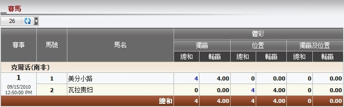

賽馬
定義:
顯示總代理基於注單佔成數的輸/贏, 投注類型為獨贏, 位置或獨贏/位置。這份報告只顯示當天的所有進行中及已結算的注單。 要查看投注歷史, 點擊總和列中的數額。

圖 1.1
对于 克爾活 (南非), 會員投注於馬匹:
- PENNY LANE: 投注額 = 20, 投注類型: 獨贏, 總代理佔成 = 20%.
--> 總代理基於佔成的所得 = 投注額 * 總代理佔成 = 20 * 20% = 4.
- DAME DE VALOIS: 投注額 = 20, 投注類型: 位置, 总代理占成 = 20%.
--> 總代理基於佔成的所得 = 投注額 * 總代理佔成 = 20 * 20% = 4.
注: 如果這些注單仍在進行中, 所有輸 /贏數額為 0。